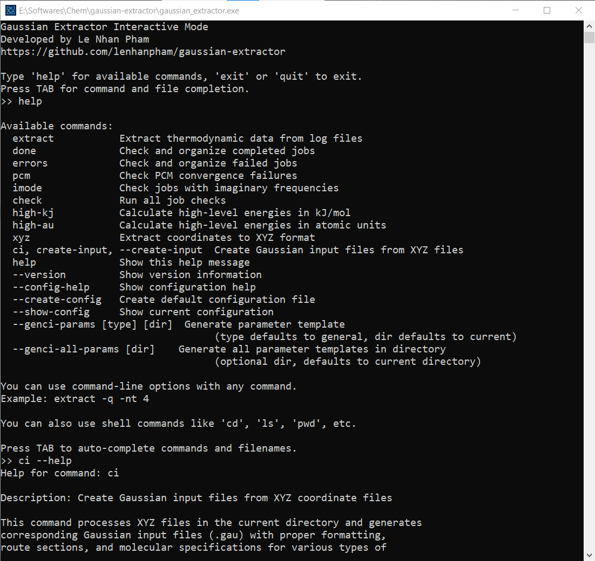

Gaussian Extractor User Manual¶
Gaussian Extractor is a high-performance, cluster-safe program designed to extract data from Gaussian computational chemistry outputs and to create inputs. It in parallel with comprehensive safety features to prevent system overload and ensure stable operation in shared computing environments.
{kind=link}
Overview¶
Gaussian Extractor provides a comprehensive suite of tools for computational chemistry workflows:
Parallel Processing: Efficiently processes multiple Gaussian output files simultaneously
Job Management: Check and organize completed, failed, and problematic calculations
Energy Calculations: Extract thermodynamic data and calculate high-level energies
Coordinate Processing: Extract and organize molecular coordinates
Input Generation: Create Gaussian input files from XYZ coordinate files
Input prarameters template: Generate and reuse parameter templates for different calculation types
Windows interactive mode: Windows users can use all features plus popular linux commands in the interactive mode
Key Features¶
- Scientific Capabilities
Extract thermodynamic properties (Gibbs free energy, enthalpy, entropy)
Check and organize job statuses (completed, failed, errors)
Calculate high-level energies combining different theory levels
Process coordinates and generate input files
- Performance & Safety
Multi-threaded processing with automatic resource detection
Cluster-aware operation (SLURM, PBS, SGE, LSF)
Memory management with automatic limits
Graceful shutdown handling
- Workflow Integration
Command-line interface with extensive options
Configuration file support for defaults
Template system for reproducible calculations
Interactive mode for Windows users
Getting Started¶
New to Gaussian Extractor? Start here:
Installation Guide - Install the software on your system
Usage Guide - Learn how to use all features with examples
api - Technical API documentation
Quick Start¶
# Basic usage - extract data from all .log files
gaussian_extractor.x
# Check job status and organize files
gaussian_extractor.x done # Move completed jobs
gaussian_extractor.x errors # Move failed jobs
# Generate input files from XYZ coordinates
gaussian_extractor.x ci --calc-type opt_freq
Contents¶
User Guide:
- Installation Guide
- Installation Methods
- Post-Installation Setup
- Troubleshooting
- Performance Optimization
- Uninstallation
- Getting Help
- Usage Guide
- Core Commands
- Configuration and Customization
- Performance and Resource Management
- Safety Features
- Advanced Workflows
- Troubleshooting
- Best Practices
- Command Reference
- Getting Help
Indices and Tables¶
Support & Contributing¶
For bug reports, feature requests, or safety concerns:
Issues: GitHub Issues
Documentation: This user manual
Help: Use
gaussian_extractor.x --helpfor command-line help
License¶
Gaussian Extractor is released under the MIT License. See the LICENSE file for details.
Version Information¶
Current Version: v0.5.0
v0.5: Interactive mode, enhanced coordinate processing, improved input generation
v0.4: Enhanced safety, job checking, high-level energy calculations
v0.3: Complete resource management and cluster awareness
v0.2: Multi-threaded processing capabilities
v0.1: Initial single-threaded version
Note
This documentation is for Gaussian Extractor v0.5.0. For older versions, please refer to the archived documentation.